How To Make A Broom
An expert broom maker explains the basic steps to making a functional and attractive broom.
By Little John Holzwart
Dec. 29, 2008
You can make your own brooms! If you have a green thumb, you can start by growing your own broomcorn. But even if you can't grow broomcorn, you can order it from a supplier (see Resources at the end of this article). Photos for each step of the broom-making process are available in the Image Gallery; see link above.
Broomcorn
One of the most common questions I hear when I am demonstrating my craft is, “What plant material is used for the broom bristles?” The material is called broomcorn (Sorghum bicolor). This plant is closely related to sweet sorghum (Sorghum vulgare), which is the plant used to produce sorghum molasses. Broomcorn is an annual and, from a distance, looks like sweet corn in the field. Yet, upon close examination, there are no cobs, just a large tassel on the top. That tassel is the part of the plant used for making brooms. Other materials can be used for the sweeper of a broom, but we're focusing on traditional corn brooms.
To make a hearth broom, 28 heads of broomcorn are used for the inside layers of bristles and 17 heads for the outside layer. Each head is measured with a cubit (the distance between your elbow to your longest finger). Put the knuckle of the corn, the place where the head meets the stalk, at your elbow. If the bristles, or brush, are past the tip of your fingers, that stalk is a keeper. If the material is too short, it will be used for a whisk broom later.
The broomcorn is prepared by cutting the stalks differently for each layer. Stalks are trimmed just past the knuckle on the stalk side for inside layers, but left longer for outside layers so they can be plaited. Place the broomcorn in a bucket of hot water with the cut ends submerged. The corn needs to soak for a minimum of 15 minutes.
Assemble the following materials before you sit down to make a broom:
- Broomcorn (about 2-3 pounds per broom)
- #18 nylon cord (for tying)
- Hemp string for sewing (20 lb. test)
- Wooden handle (18 inches)
Tools
- foot held apparatus (for holding cord taut)
- scissors
- knife
- large needle
- sewing clamp
- lighter
- drill
The Handle
While the broomcorn is soaking, you can prepare the broom handle. I prefer the rustic look and use a stick with the bark still on it. (Commercial dowel handles can be ordered from a supplier.) When I collect handles, I cut them to length (18 inches for a hearth broom), and they dry for at least six months. If any shrinkage, cracking or bark peeling occurs while drying, reject those sticks. Sharpen the tip with a hatchet or knife and drill an eighth-inch hole just above the taper. That hole is for tying the string onto the handle.
Cord
The next step is to choose the nylon cord and to wrap it around the apparatus that will be used to create tension when tying the broom. I make and use something called a foot spinner. The photo offers a visual of this as well as other necessary tools. It is not high tech; with a few pieces of scrap wood and some deck screws, it is easy to make one of these. Some people simply use a stick, but I prefer the spinner as it keeps the string from rubbing on the ground.
I use #18 nylon cord or larger. Mason line will work, although finding appealing colors may be a challenge. Some outfitters or camping stores will have nylon cord for anchoring duck decoys. And local craft stores carry macramé cord, which also works well.
Tying the Broom
When the broomcorn has soaked for at least 15 minutes, it's time to start tying. After tying the string to the handle, begin by placing the inside layer of broomcorn. The heads are placed one at a time under the string, below the knuckle on the brush. They are secured with a tug on the cord. After one inside layer has been placed around the stick, a second inside layer is added. There may be extra pieces of broomcorn, which is fine. It is better to have too much than not enough.
The next step is to tie the outside layer. First, trim the ends from the first two layers, tapering the material toward the handle. Be careful not to cut the string. Wind the string around the stalks until it's on the handle; then add the outside pieces. Place the outside layer of broomcorn heads with the pith (concave) side to the handle. Like the other layers, place them one piece at a time. Be sure to maintain strong tension when putting on the corn. The string should compress the material. When the top layer has been placed all around the handle, wind the string around the broom at least eight times. That thick band of string should be like a Victorian corset, squeezing the material onto the handle.
Pay close attention to posture when making a broom and let some slack out from the spinner regularly. It's easy to forget to let slack out, and before you know it, you can be slouched over, working at your feet.
Plaiting
The next step is the weave or plaiting. You can omit this step by winding over the stalks and making a band at the top just like the first band of string. Most of my students want to plait the top. This is done using a weaving technique, moving the string over and under alternating stalks.
Plaiting works best with an odd number of stalks. If there is an even number, simply find the thickest stalk and split it in half with a knife or thumb nail.
After a comfortable distance has been reached (leaving enough stalk to finish the tying), make another band of string. If you are going around the handle eight times, put in a nylon loop (note green cord in photo) after two times around. Finish the last wind around and hold the string with your thumb. Cut the cord and put the end through the nylon loop. Then pull the nylon loop to hide the end of the tying cord. That finishing bit is called a “blind knot.” Cut the frayed cord hanging from the piece to about an eighth inch long and singe it with a lighter.
Sewing
Now the broom looks like it's having a bad hair day: It hasn't been sewn yet. I prefer to use waxed hemp for sewing brooms. The hemp comes in a variety of colors, and the wax holds better.
For making a flat broom, you'll need a sewing clamp (two boards held together with bolts and wing nuts). When the clamp is in place and tightened, measure the hemp string. I hold the spool at my waist and measure the length by making three pulls the distance from my belly button to the end of my arm. Cut the string and fold it in half. Place it around the broom bristles and put the two ends through the loop. See photo. (This is a lark's head knot. It's not really a knot; it's more of a tie or a hold.)
Now thread the needle (I use an eight-inch needle from my friend the blacksmith) and make a stitch where the strings come together. I place this apex on the side of the broom, rather than the flat area. Now proceed with a lock stitch. (I’ve included a diagram of one variation in the image gallery.)
When you finish, you will run your needle all the way through the broom the long way across. Cut the strings flush and start a new row. I usually use three rows of stitching for my brooms.
Finishing Up
To finish, cut the bottom of the broom flat and thread a leather strip or piece of jute cord through a hole in the handle to hang the new broom. Enjoy its beauty when not in use. It's a good idea to hang brooms to extend their life. If a broom is leaning up in a corner, the bristles will become curled and won’t be productive. More stress on the bristles means a shorter life span of the broom. Take good care of your broom, and it will last a long time. Happy sweeping!
Little John Holzwart is a broom maker, artist, gardener, wildforager, and along with his partner, Linda Conroy, is the proprietor of Moonwise Herbs and Brooms. He has been collecting and using things from nature since childhood. Whether he is collecting branches and found objects for broom handles, or growing his own broomcorn, he is always inspired by the natural world. John has been making brooms for several years and teaches classes all across the United States. You can see his work and schedule at www.brooms.moonwiseherbs.com.
Resources
Broomcorn
R. E. Caddy and Company
881 N. Raleigh St.
Greensboro, NC 27405
Phone: 336-273-3609
Nylon Cord
Hardware stores (mason line)
Craft stores (macramé cord)
Hemp String
Bead stores
Craft stores
R. E. Caddy and Company
For endless broom tips go to groups.yahoo.com/group/Brooms.
Here's another simple broom-making technique, Whittle a Birch Broom.
Have you made a broom? Share your tips and techniques in the comments section.
|
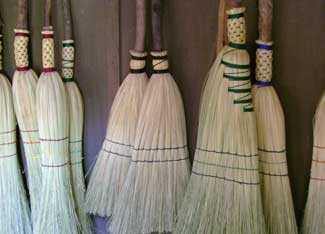 JOHN HOLZWART With a few simple tools and materials, you can make your own brooms. |
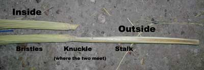 JOHN HOLZWART To make a hearth broom, 28 heads of broomcorn are used for the inside layers of bristles and 17 heads for the outside layer. |
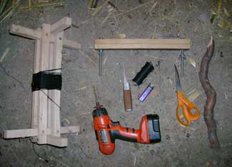 JOHN HOLZWART Only simple tools are required to make a broom. Note foot held apparatus (for holding cord taut), left, and the sewing clamp, top right. |
|
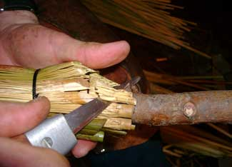 JOHN HOLZWART Before tying the outside layer, trim the ends from the previous two layers, tapering the material toward the handle. Be careful not to cut the string. |
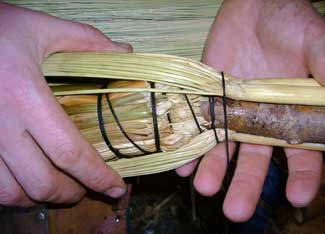 JOHN HOLZWART Place the outside layer of broomcorn heads with the pith (concave) side to the handle. |
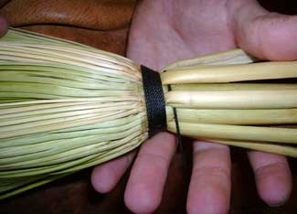 JOHN HOLZWART When the top layer has been placed all around the piece, wind the string around the broom at least eight times. |
|
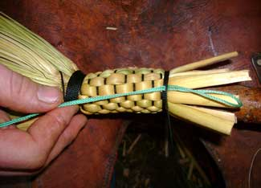 JOHN HOLZWART Plaiting works best with an odd number of stalks. If there is an even number, simply find the thickest stalk and split it in half with a knife or thumb nail. The green cord is used to pull the end of the cord under the band to hide it. |
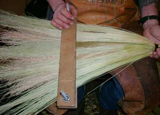 JOHN HOLZWART For making a flat broom, you'll need a sewing clamp (two boards held together with bolts and wing nuts). |
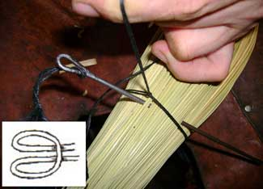 JOHN HOLZWART Put the cord around the broom bristles and run the two ends through the loop. This is a called a lark's head knot, but it's more of a tie or a hold. |
|
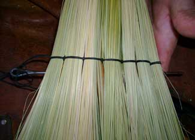 JOHN HOLZWART When you finish you will run your needle all the way through the broom the long way across. Cut your strings flush and start a new row. |
 JOHN HOLZWART The lock stitch is used to sew the broom. |
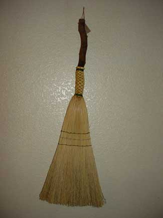 JOHN HOLZWART Cut the bottom of the broom flat and thread a leather strip or piece of jute cord through the hole in the hand to hang the new broom. |